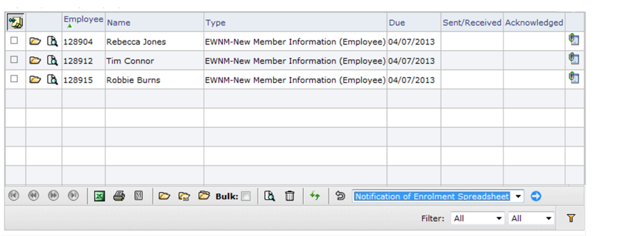
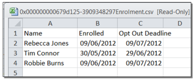
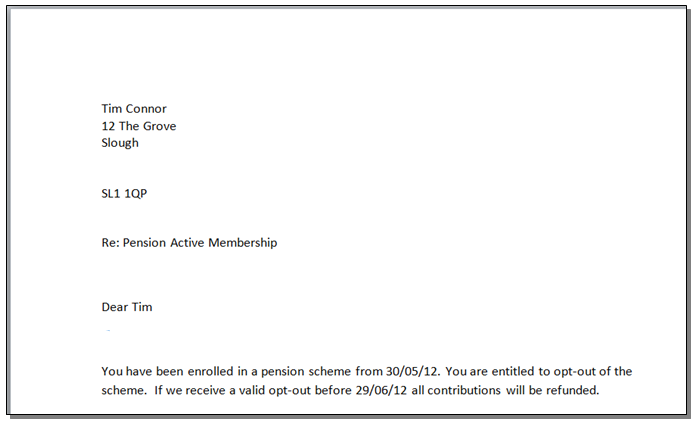
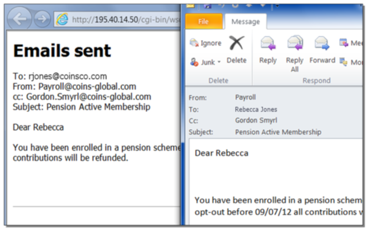

To produce notifications using the Notifications Workbench:
- Use the filters to get to the list of notifications you want to send. This will be a single notification type, typically only unsent notifications, and you might want to filter to those with or without an email address.
- Select the employees for whom you want to produce the notifications, or leave all rows unselected to merge all employees in the given filter criteria.
- Click the Merge button
 .
. - Choose the merge file you want to use, then click the action button
 .
.
Employee Notifications Merge Screen
Example outputs are shown below. For spreadsheet or document you can choose to open or save the output.
Notification Merge ? Spreadsheet Output
Notification Merge ? Document Output
For email you will be given notification of the emails that have been sent.
Notification Merge ? Email Output
